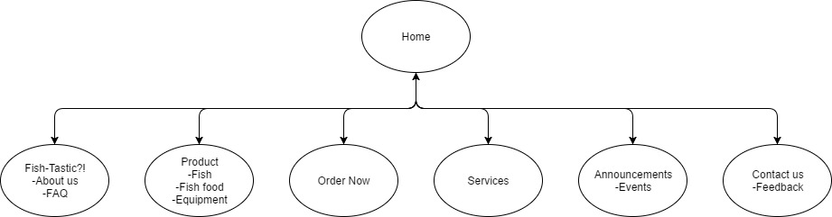

Members: Stevanie Huang, Joel Lim
The purpose of this website is to introduce both new and existing customers to the new branch of their company (pet shop and landscape/pond classes) and promote their current business of selling fish supplies while increasing sales.
The success of the website will be evaluated through the increase in sales and new customers for the business over a 3 month period. Other forms of advertisement currently in use will be kept constant and at the end of this period the rate of increase will be compared to the 3 months before this website is launched to determine if this website was successful.
The website is successful when it shows a significant impact in the business through the sales revenue and its contribution towards increasing the customer base.
In measurement, the website is said to be success if number of order increases by at least 15% and the number of customer increases by at least 10%.
Our target audience are those who want pets, specifically, fish and current owners of pets. It also includes the pet lovers which can be people in any age range.
To be specific, this website targets for people in age range of 25~40years old.
The website will be kept professional and scannable as the majority of customers should be working class adults perhaps buying pets or supplies for their kids or as gifts to friends and family, thus they will want to be able to browse quickly and efficiently.
Pets and products will also come with pictures alongside their names to give a clear idea of what the user is purchasing as adults tend to be skeptical when it comes to online ordering and navigation will be kept simple and clean for easy page browsing.

provide links here to your 2 comps (images or Web pages)
provide a link here to your developed pages